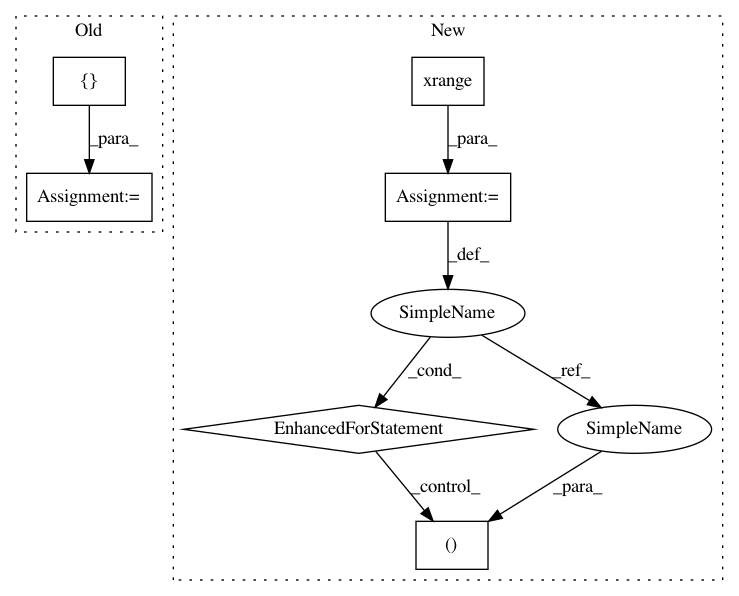

3cf500d2cc6f6e783332b6b316a1973cd9b07e25,brian2/tests/test_spikegenerator.py,,test_spikegenerator_basic,#,17
Before Change
mon = StateMonitor(G, "v", record=True,
codeobj_class=codeobj_class)
indices = np.array([3, 2, 1, 1, 4, 5])
times = np.array([6, 5, 4, 3, 3, 1]) * ms
SG = SpikeGeneratorGroup(10, indices, times,
codeobj_class=codeobj_class)
S = Synapses(SG, G, pre="v+=1", connect="i==j",
codeobj_class=codeobj_class)
net = Network(G, SG, mon, S)
net.run(7*ms)
// The following neurons should not receive any spikes
for idx in [0, 6, 7, 8, 9]:
After Change
s_mon = SpikeMonitor(SG)
net = Network(SG, s_mon)
net.run(5*ms)
for idx in xrange(5):
generator_spikes = sorted([(idx, time) for time in times[indices==idx]])
recorded_spikes = sorted([(idx, time) for time in s_mon.t["i==%d" % idx]])
assert generator_spikes == recorded_spikes
@with_setup(teardown=restore_device)
def test_spikegenerator_standalone():
"""
Basic test for `SpikeGeneratorGroup` in standalone.
In pattern: SUPERPATTERN
Frequency: 3
Non-data size: 6
Instances
Project Name: brian-team/brian2
Commit Name: 3cf500d2cc6f6e783332b6b316a1973cd9b07e25
Time: 2014-06-25
Author: marcel.stimberg@ens.fr
File Name: brian2/tests/test_spikegenerator.py
Class Name:
Method Name: test_spikegenerator_basic
Project Name: PyMVPA/PyMVPA
Commit Name: b7baa8bf3081969b987e59b22610c0208638324f
Time: 2012-11-09
Author: nikolaas.oosterhof@unitn.it
File Name: mvpa2/tests/test_surfing_voxelselection.py
Class Name: SurfVoxelSelectionTests
Method Name: test_voxel_selection_alternative_calls
Project Name: PyMVPA/PyMVPA
Commit Name: c7cc116394497fb954eee67f996e1e14f32d9aec
Time: 2015-06-26
Author: debian@onerussian.com
File Name: mvpa2/datasets/eventrelated.py
Class Name:
Method Name: fit_event_hrf_model